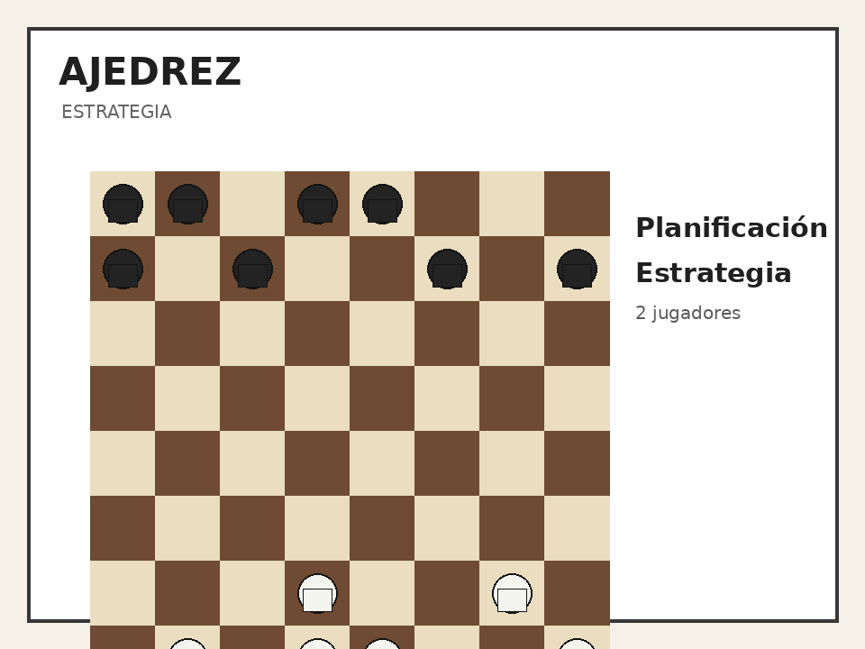
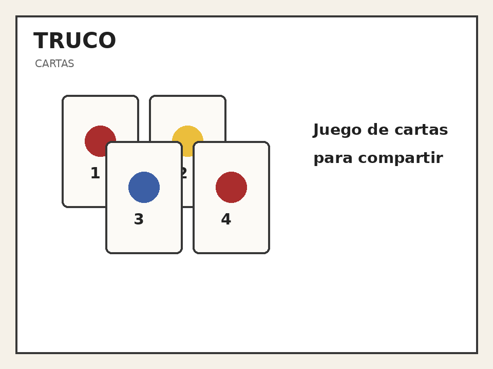
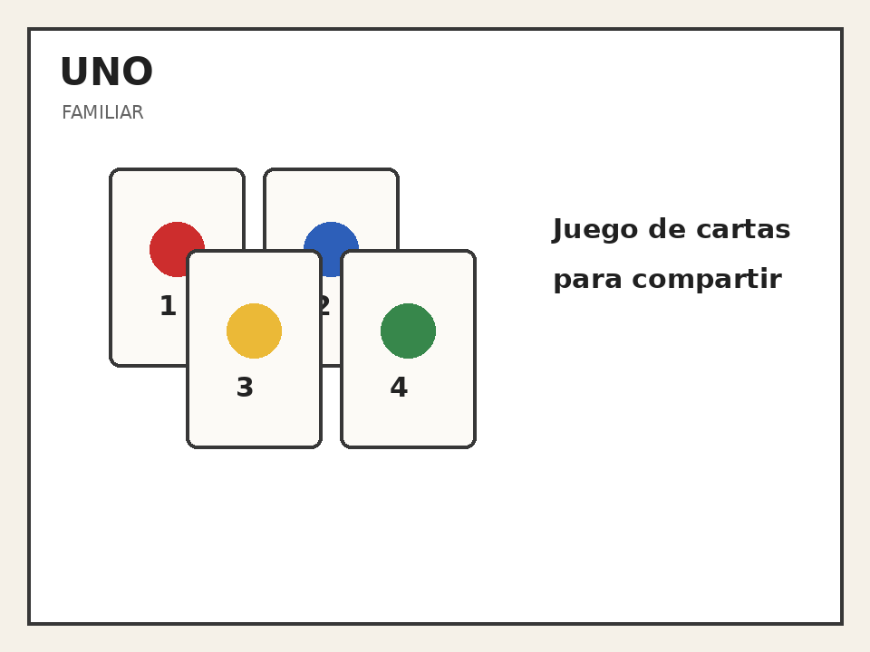
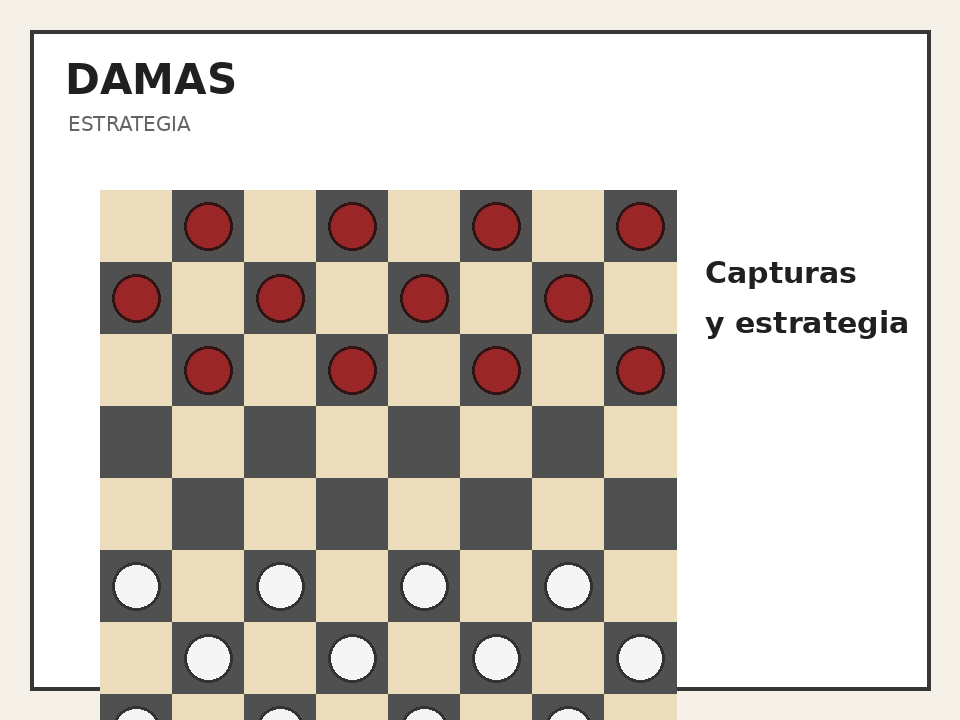
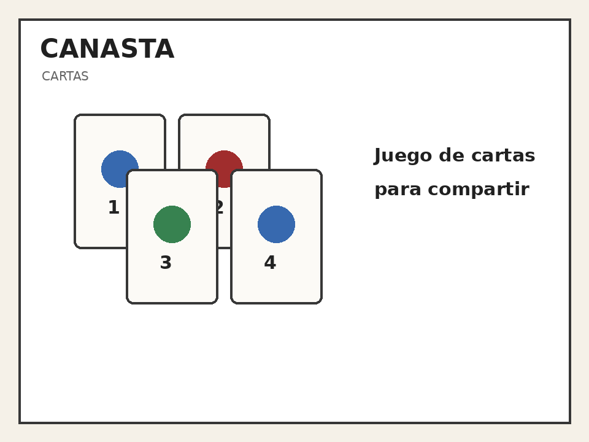
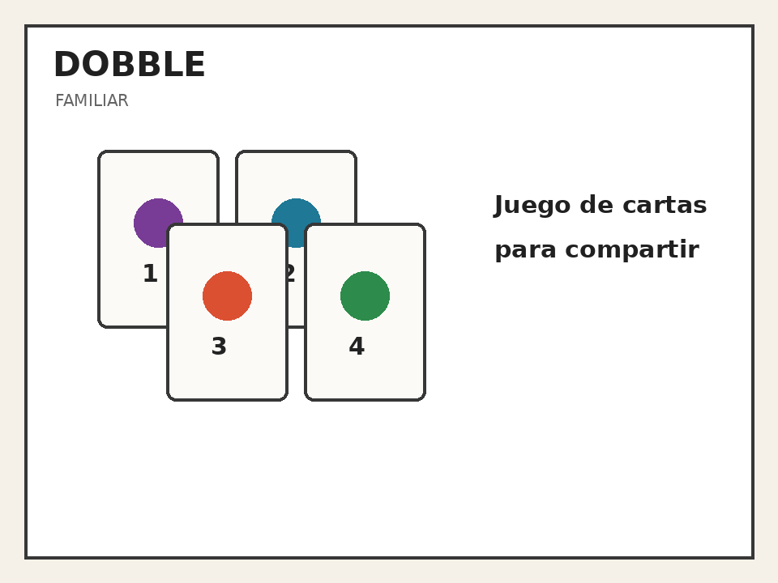

Estrategia
Juegos donde la planificación y la toma de decisiones son protagonistas.
Ver juegos de estrategiaBienvenido a nuestra ludoteca. Los juegos están organizados en las categorías estrategia, cartas y familiares. Elegí una categoría en la barra de navegación para consultar los juegos disponibles.

Juegos donde la planificación y la toma de decisiones son protagonistas.
Ver juegos de estrategia
Juegos que utilizan naipes y reglas de combinación, memoria o competencia.
Ver juegos de cartas
Opciones pensadas para compartir entre personas de distintas edades.
Ver juegos familiaresElegiste la categoría estrategia. Estos son los juegos disponibles.
Juego clásico de estrategia para dos personas en el que cada movimiento requiere planificación y anticipación.
Reglamento
Juego de tablero basado en desplazamiento y captura de piezas, donde es fundamental planificar cada jugada.
ReglamentoElegiste la categoría cartas. Estos son los juegos disponibles.
Juego de cartas tradicional con baraja española, basado en la estrategia, el engaño y la toma de decisiones.
Reglamento
Juego de cartas basado en formar combinaciones y canastas, con especial importancia de la planificación de las jugadas.
ReglamentoElegiste la categoría familiares. Estos son los juegos disponibles.
Juego de cartas por colores y números, pensado para jugar de manera rápida y sencilla en grupo.
Reglamento
Juego rápido de observación y reconocimiento de símbolos en el que los jugadores deben encontrar coincidencias.
ReglamentoPara comunicarte con la ludoteca, completá el siguiente formulario simple.
Este sitio es mantenido por el equipo de la ludoteca, encargado de actualizar el catálogo, las imágenes y los reglamentos descargables.
La página fue diseñada siguiendo el enunciado: HTML y CSS separados, navegación mediante enlaces y sin scripts.